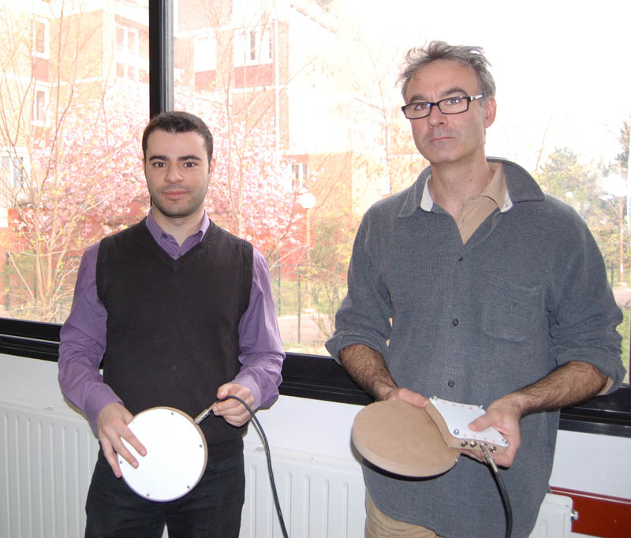
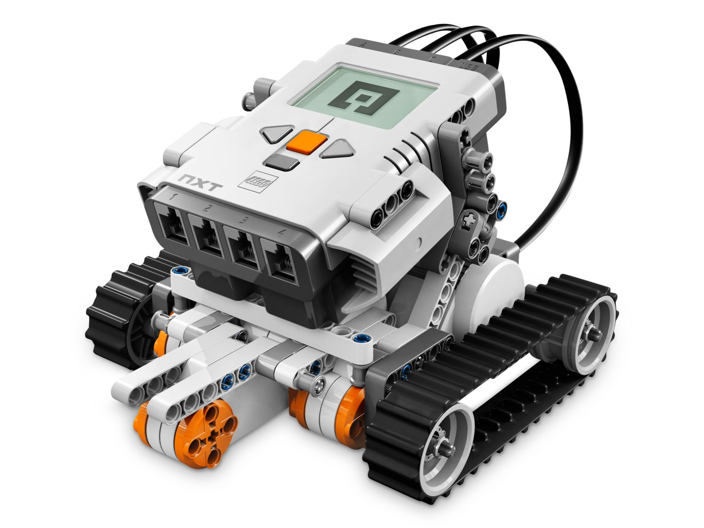
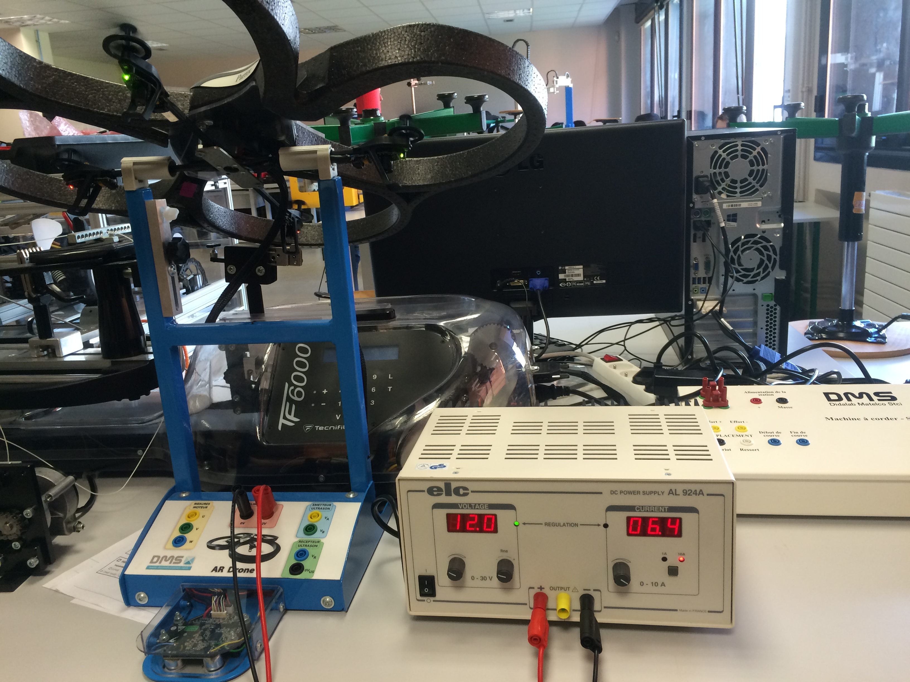
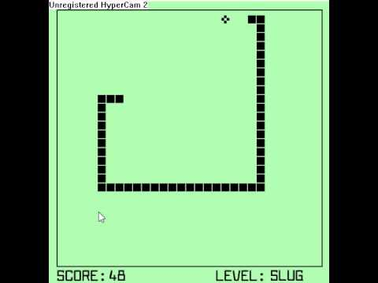
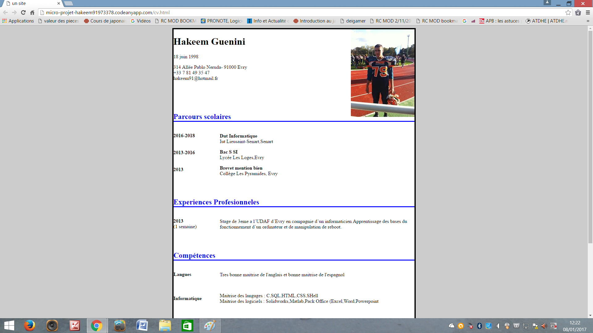
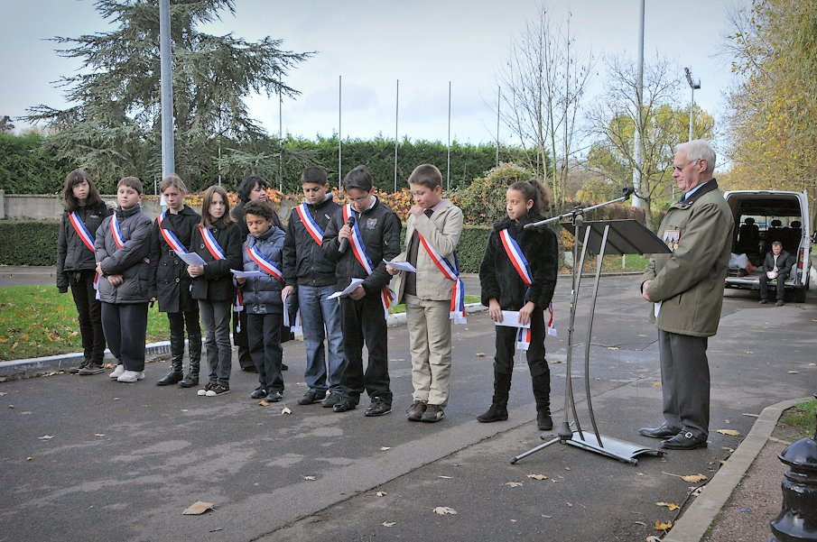

| Création d'une batterie numérique |
Projet réalisé en classe de troisième |
Creer et utiliser par la suite la batterie et nous initialiser avec ce qu'etait un grand "projet" |
Oui |
 |
Un projet assez sympathique. Bien que la majeur partie du projet a été réalisé par les professeurs, j'ai quand meme apprécie participé à quelque chose |
| Contrôler un robot NXT avec la camera kinect |
Projet réalisé au cadre des TPE de première |
Pouvoir controler un robot NXT par des gestes avec la camera kinect. Par exemple, bouger son bras a droite pour que le robot tourne a droite, lever le pied pour qu'il avance... |
Oui |
 |
L'un de mes meilleurs projets en termes de resultats final. Nous avions accompli tous nos objectifs.Mais le projet en lui-meme ne s'etait pas bien commencé et plusieurs mois passèrent sans aucun resultat. Bizzarement, la majeur partie du projet s'est terminé les dernieres semaines...peut etre un élan de desespoir ? |
| Améliorer l'autonomie d'un drone |
Projet réalise au cadre des PPE de Terminale |
Faire en sorte que le Drone Ar Parrot 2 puisse voler plus longtemps ( c'est a dire, consommer moins d'électricité lorsqu'il vole). |
Non |
 |
Un projet vraiment vraiment dur. Nous etions bien parti au debut. Malheureusement, nous n'avons pas réussi physiquement a faire l'amélioration par manque de moyen et l'apparation succesives de plusieurs problemes (Le drone ne marchait plus).On a donc du improviser et ca a plutôt bien fonctionner |
| Créer un jeux du serpent en C |
Projet réalisé en 1ère année en IUT informatique |
Rien de spécial mis a part creer le jeux de A à Z |
Oui |
 |
Projet tres compliqué. Surtout que presque aucune aide n'est donné, seulement des indications et regles qui ont rendu le travail plus dur. Mais, meme si le projet est dur, on y'a appris beaucoup de chose et nottamment l'utilisation d'une bibliothèque graphique |
| Creer une page perso en HTML |
Micro-projet réalisé pour le cours de Conception de documents informatiques |
Creer une page HTML fonctionnelle. Plus de détail ici |
J'espere |
 |
Projet plutot sympa ou il n'y a pas vraiment de limites et ou nous pouvons un peu créer ce que l'on veut. Plutot utile aussi pour apprendre l'HTML et le CSS par soi-même |
| Plein de petites interventions |
Dans le cadre des 2 ans ou j'etais au cme(conseil municipal des enfants) de ma ville |
En tant que Cme, nous intervenions dans differents endroits, generalement pour des activités culturelles. Nous faisions des discours, des aides etc... |
Oui |
 |
Une superbe expérience que j'ai vécu. Grace à ces 2 ans au CME, j'ai appris de nouvelle choses ( surtout culturellement) et me suis intéréssé a des choses dont je n'aurai jamais entendu parler sinon.C'est a cette periode que j'ai appris a communiquer a un large public grace aux nombreux discours et interventions faites. |